MSc Computing (AI/ML), Imperial College London
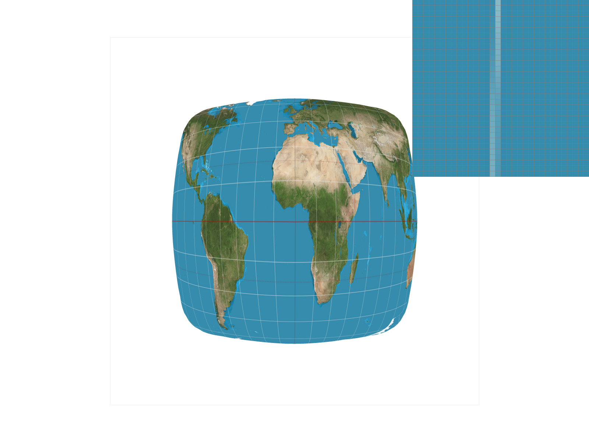
Implemented a full rasterization pipeline including triangle rasterization, supersampling, barycentric interpolation, and mipmapping. Optimized bounding box rendering and analyzed floating-point precision issues. Implemented advanced sampling techniques such as jittered sampling and anisotropic sampling for high-quality anti-aliasing and texture filtering.
Private Repository — Access on Request.
Read Technical Report →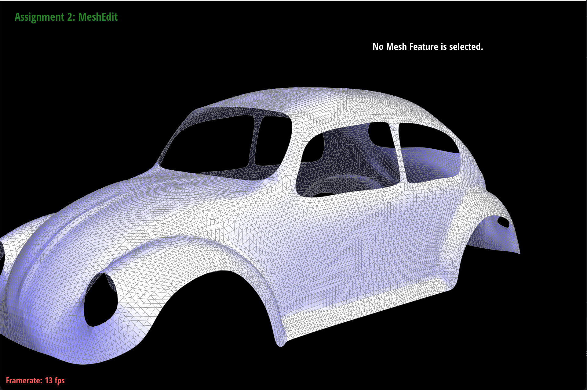
Constructed and manipulated triangle meshes using a half-edge data structure. Implemented edge flips, splits, and vertex smoothing with loop subdivision for smooth surface refinement capable of handling boundaries and maintaining manifold consistency.
Private Repository — Access on Request.
Read Technical Report →Implemented a physically based Monte Carlo path tracer as the baseline rendering engine, supporting soft shadows, global illumination, and diffuse and microfacet BSDFs. Integrated a bounding volume hierarchy (BVH) for efficient ray–scene intersection and applied multiple importance sampling to improve convergence and noise reduction in complex lighting environments.
Private Repository — Access on Request.
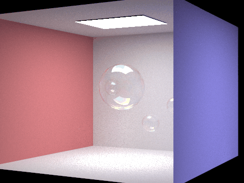
Developed a physically based spectral path tracer simulating thin-film interference to reproduce the iridescent appearance of soap bubbles and oil films. Extended a Monte Carlo global illumination framework to sample light transport across the visible spectrum with wavelength-dependent reflectance and dispersion. Implemented a custom thin-film BSDF model accounting for phase shift and film thickness, combined with triplanar Perlin noise to generate realistic interference patterns and surface variation.
Private Repository — Access on Request.
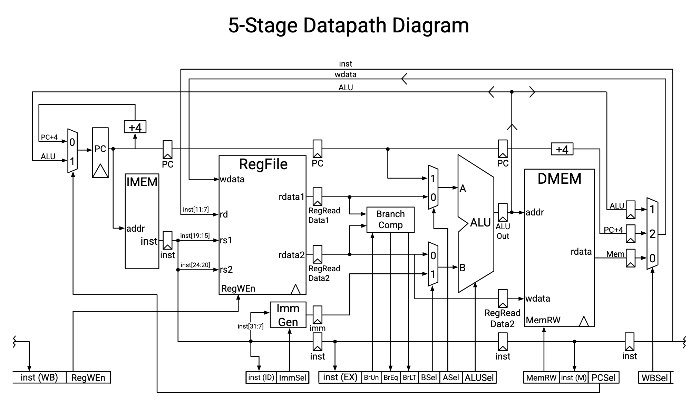
Implemented a fully functional 5-stage pipelined RISC-V processor (RV32I + M) featuring instruction fetch, decode, execute, memory, and write-back stages. Designed and verified hazard detection and forwarding logic for data dependencies, with precise pipeline register synchronization to maintain throughput and correctness. Integrated a ROM-based control unit, immediate generator, and ALU supporting arithmetic, branch, and multiply instructions. Achieved complete compliance with the RISC-V base specification and validated using extensive test programs.
Concept diagram shown (source: UC Berkeley CS 61C). Actual Logisim design available upon request.
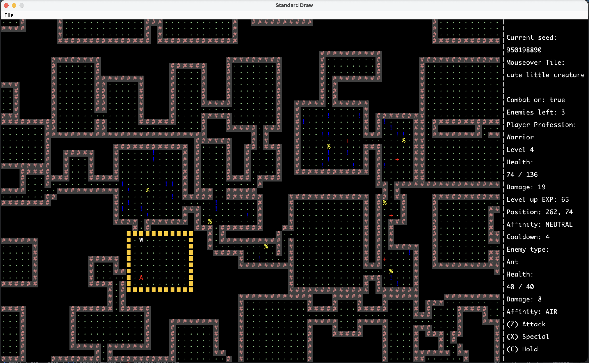
Engineered a high-performance procedural generation engine using density maps and a binary space partition tree, capable of producing GiB-scale dungeons within seconds. Designed a class-based combat system with enemy AI, leveling mechanics, and interactive objects to create complex gameplay. Integrated an adaptive UI/HUD providing real-time grid data and layout adjustments across modes. Implemented a robust multi-slot save and replay system ensuring complete game state persistence and reviewability.
Private Repository — Access on Request.
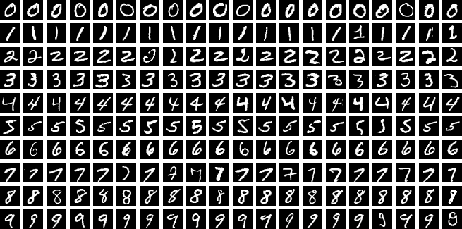
Built and optimized a multilayer perceptron (MLP) image classifier entirely in RISC-V assembly, successfully classifying MNIST handwritten digits. Managed all memory allocation, matrix operations, and activation computations manually at the hardware level, demonstrating efficient arithmetic and control-flow design on a custom instruction set architecture.
Private Repository — Access on Request.
Implemented a custom Scheme interpreter in Python supporting lexical and dynamic scoping, higher-order functions, and tail recursion optimization. Built a recursive descent parser and an evaluator with an environment model capable of handling closures and nested function calls efficiently.
Private Repository — Access on Request.
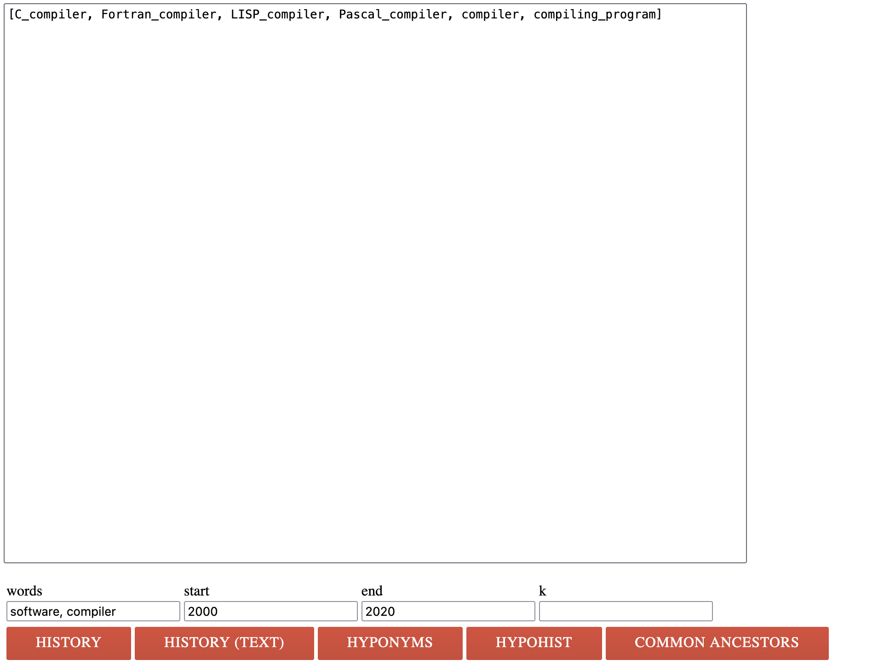
Parsed large synonym–hyponym CSV datasets (400 MiB+) and constructed directed word graphs with efficient BFS traversal and pruning. Generated interactive HTML visualizations for exploring lexical relationships.
Private Repository — Access on Request.
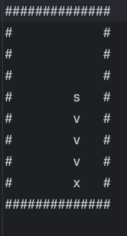
Implemented a classic Snake game in pure C with real-time keyboard input, dynamic memory management, and terminal rendering. Built a custom game loop handling collision detection and state updates at fixed frame rates. Designed a parser to read external text files defining board layouts and irregular wall structures, allowing flexible level configuration from user input.
Private Repository — Access on Request.
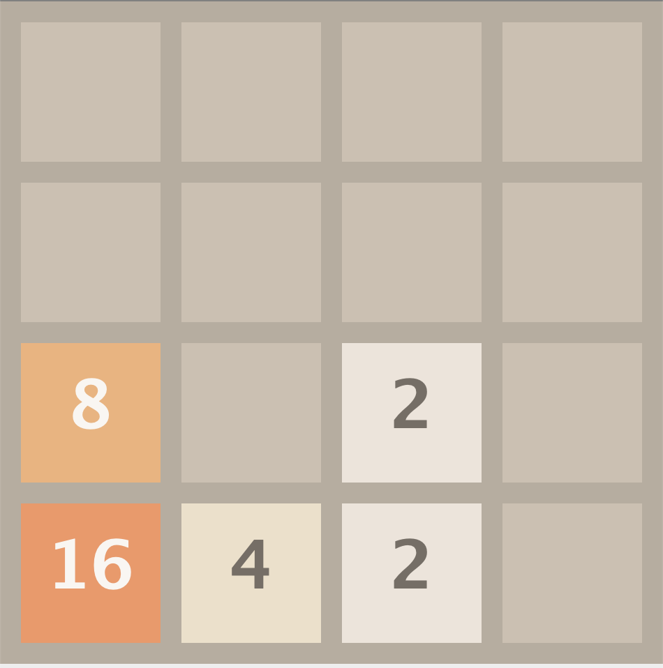
Implemented the puzzle game 2048 in Java using an object-oriented design. Built a grid-based state manager supporting tile merging, move history, and dynamic scoring. Integrated a responsive GUI with keyboard controls and smooth tile animations to replicate the original gameplay experience.
Private Repository — Access on Request.
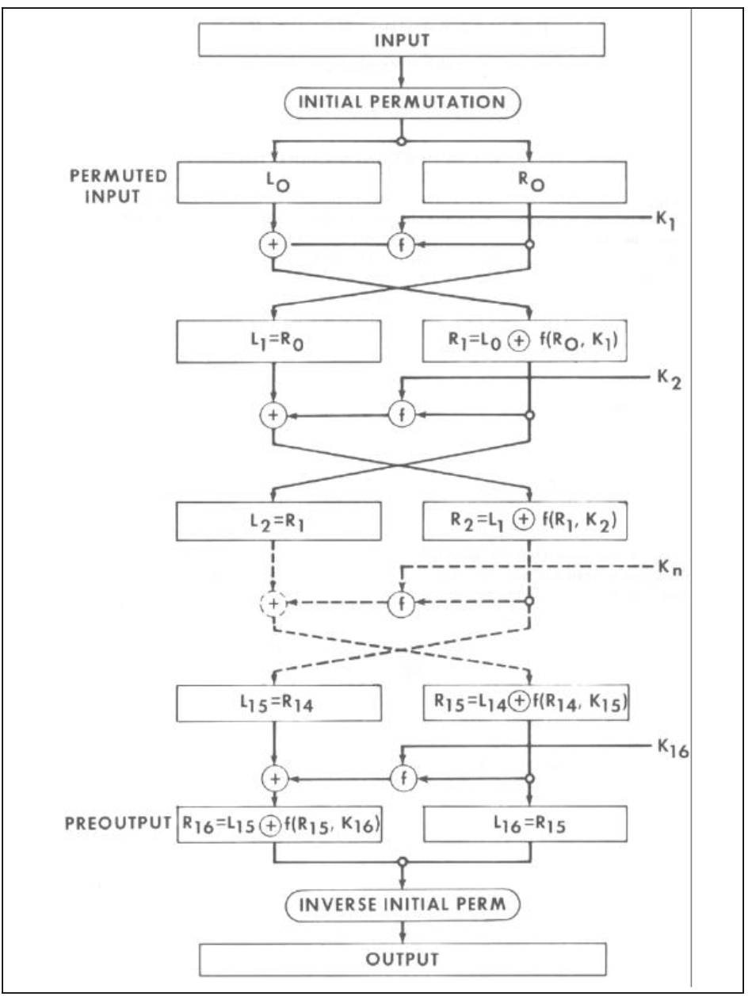
Conducted a linear cryptanalysis of the Data Encryption Standard (DES) using a multilayer perceptron (MLP) model trained on plaintext–ciphertext pairs. Implemented Python and Mathematica experiments to analyze how neural networks approximate S-box mappings and how imperfect S-box designs can be exploited. Explored the correlation between training accuracy and the number of Feistel rounds, demonstrating how learning behavior reveals structural patterns in block ciphers.
University of Waterloo — Supervised by Prof. Gautam Kamath
Code and implementation details available upon request.
Read Paper →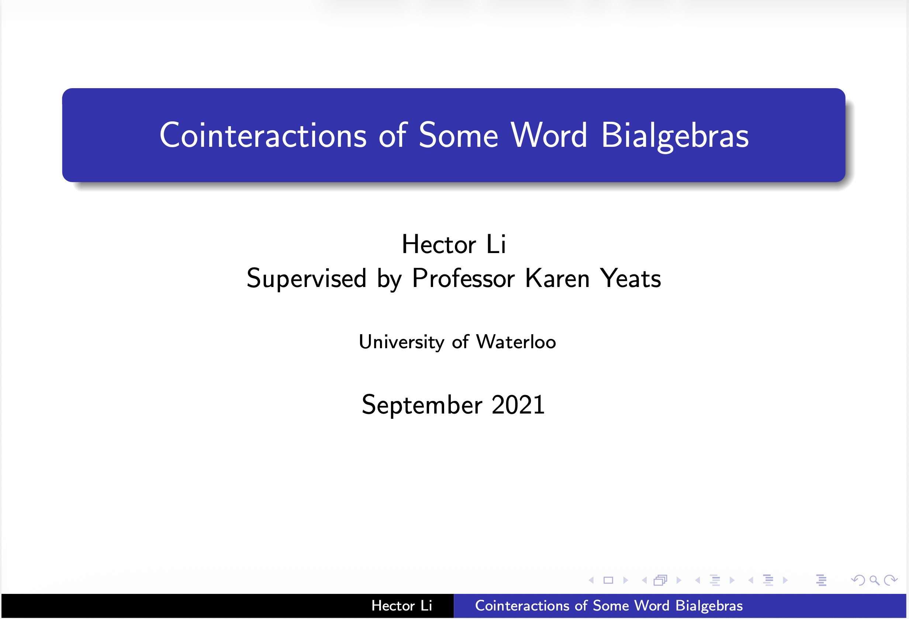
Studied Hopf algebra structures and cointeractions between concatenation–deshuffle and shuffle–deconcatenation bialgebras. Explored gradings, antipodes, and potential combinatorial applications.
University of Waterloo — Supervised by Prof. Karen Yeats
View Presentation Slides → Read Paper →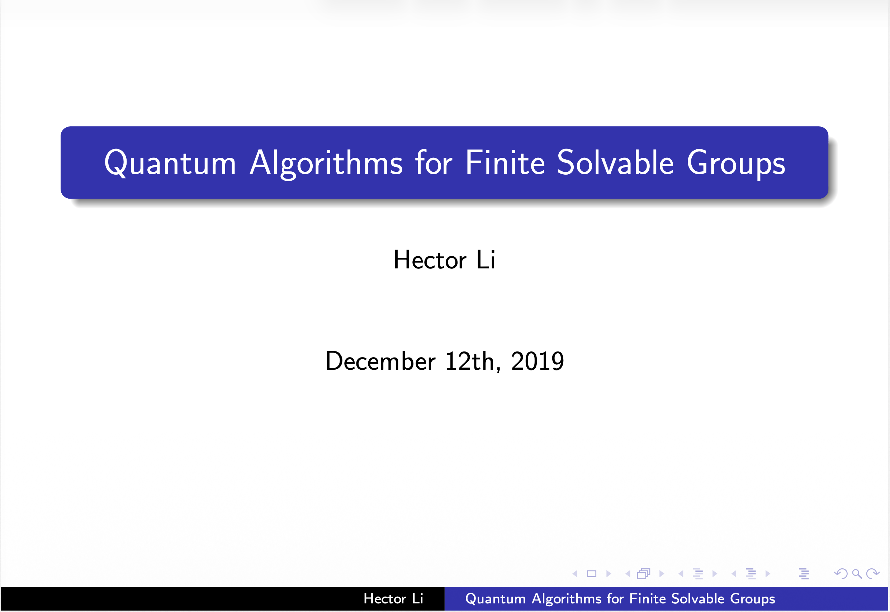
Presented an exposition of Watrous’ 2001 algorithm for computing orders of solvable groups using quantum Fourier transforms and subgroup superpositions.
University of Waterloo — Supervised by Prof. Richard Cleve
View Presentation Slides →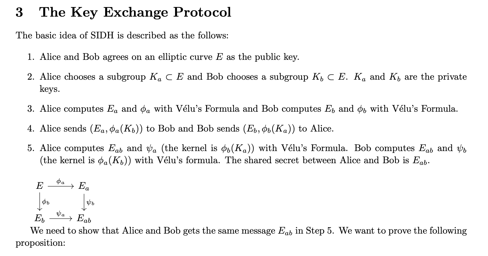
Wrote an expository paper explaining elliptic-curve isogenies and the mathematical foundations of the Supersingular Isogeny Diffie–Hellman key exchange protocol. Detailed the algebraic structure of elliptic curve groups, rational isogenies, and Vélu’s formula. Analyzed the post-quantum security assumptions underlying SIDH and its relation to the hardness of computing supersingular isogenies.
University of Waterloo - Supervised by Prof. Douglas Stebila
Read Paper →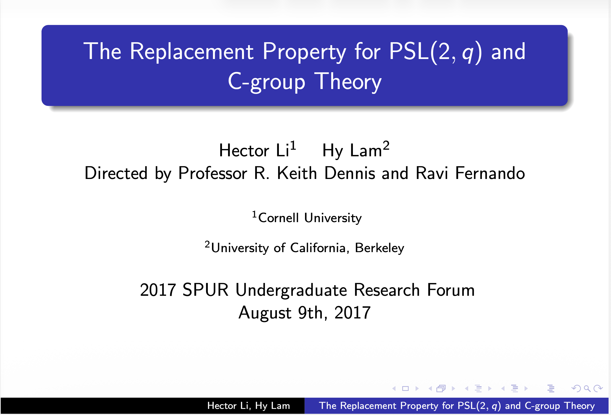
Presented at the Cornell Summer Program for Undergraduate Research (SPUR 2017). Studied the replacement property in projective special linear groups PSL(2, q) and its relation to C-groups and regular polytopes. Analyzed irredundant generating sequences, involution structures, and the classification of maximal subgroups via Dickson’s theorem. Explored connections between abstract group theory and geometric combinatorics.
Cornell University — Directed by Prof. R. Keith Dennis and Ravi Fernando
View Presentation Slides →